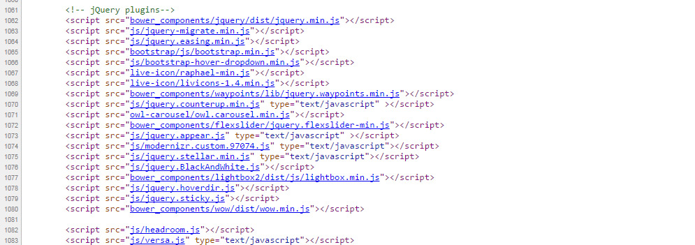

This product requires the following CSS files, For main css file, its depend on which demo template you are use.
<link rel="stylesheet" href="bootstrap/bootstrap.min.css">
<link rel="stylesheet" href="css/style.css">For sliders, animations, popups etc., For example...
| On Scroll Animations | css/animate.css |
| Master slider | masterslider/style/masterslider.css, masterslider/skins/default/style.css |
| Cube portfolio | cubeportfolio/css/cubeportfolio.min.css |
| Flex Slider | bower_components/flexslider/flexslider.css |
| Lightbox 2 | bower_components/lightbox2/dist/css/lightbox.css |
| Font Awesome Icons | bower_components/font-awesome/css/font-awesome.min.css |
| ET-Line Icons | et-line-icons/et-line.css |
This product requires the following JS files:
<script type="text/javascript" src="bower_components/jquery/dist/jquery.min.js"></script>
<script type="text/javascript" src="bootstrap/css/bootstrap.min.css"></script>
<script type="text/javascript" src="js/versa.js"></script>NOTE: For extra elements like sliders, Live icons, google maps, working forms etc, you need to include their own js files before the versa.js file.
